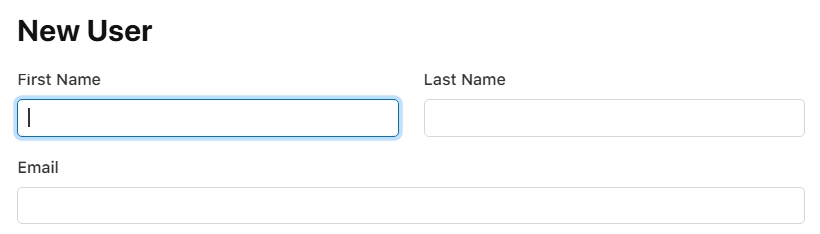
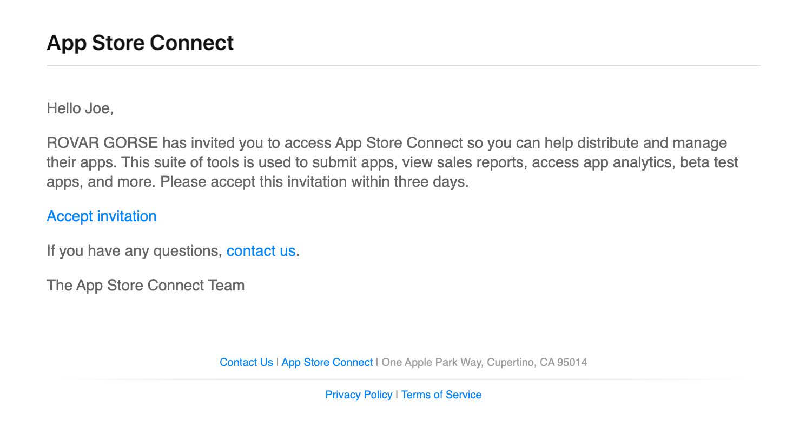
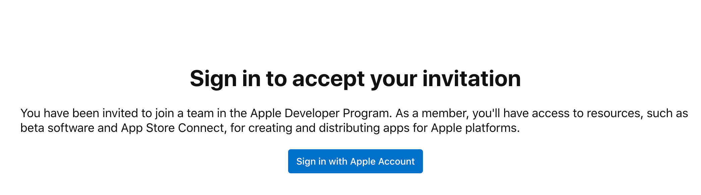
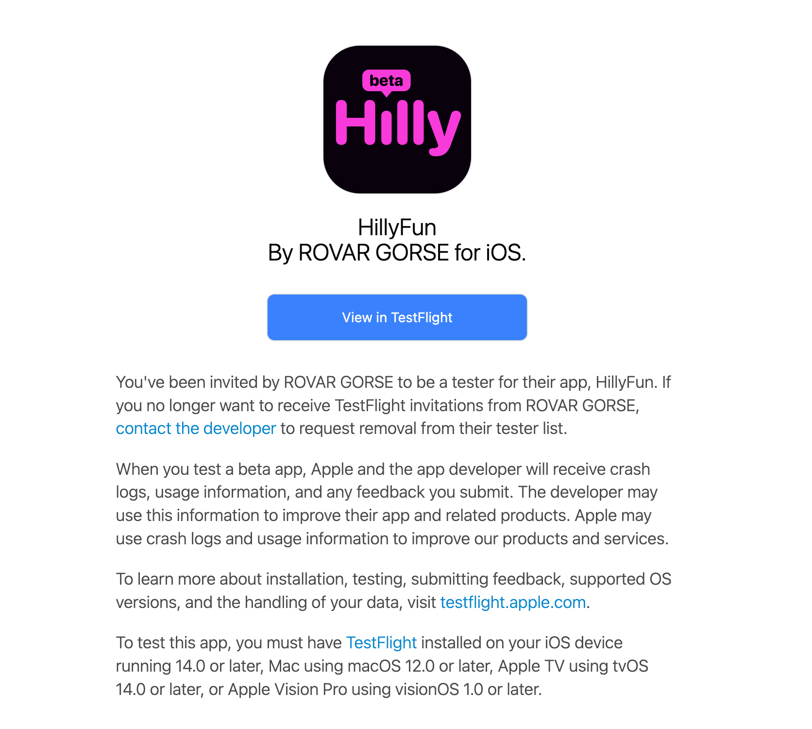
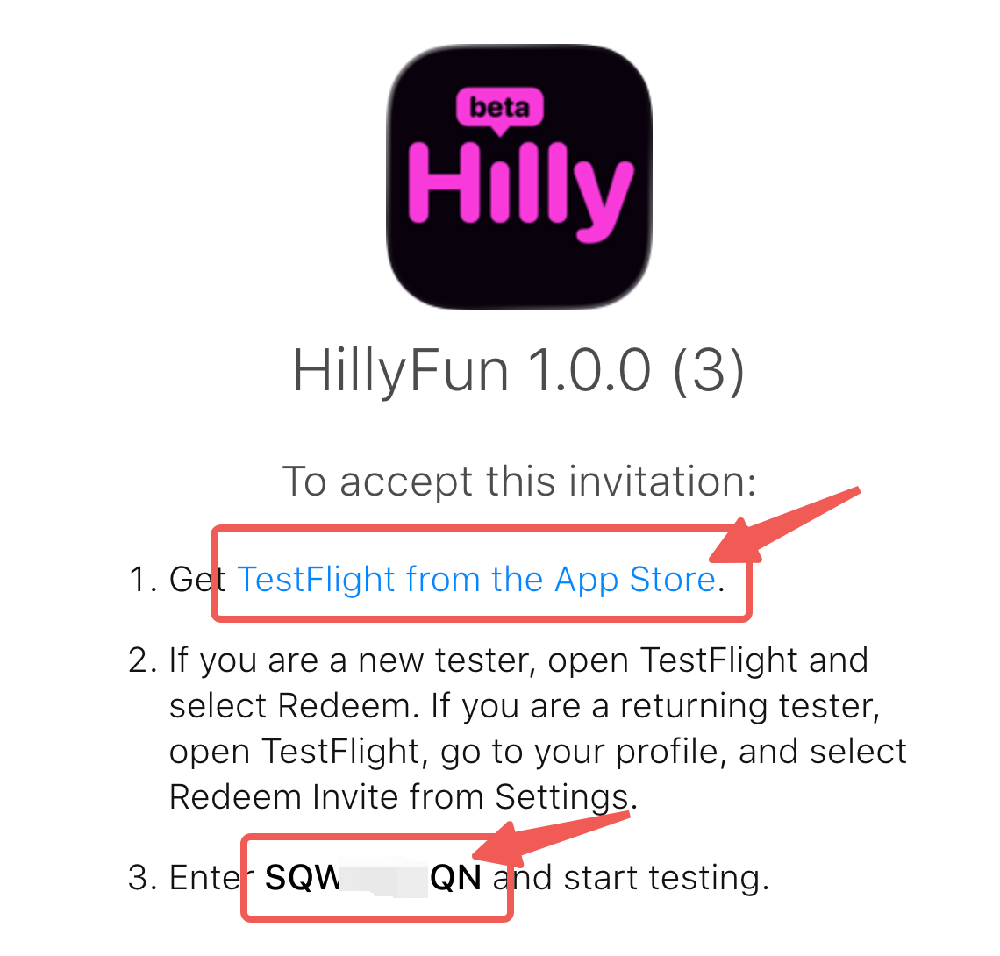
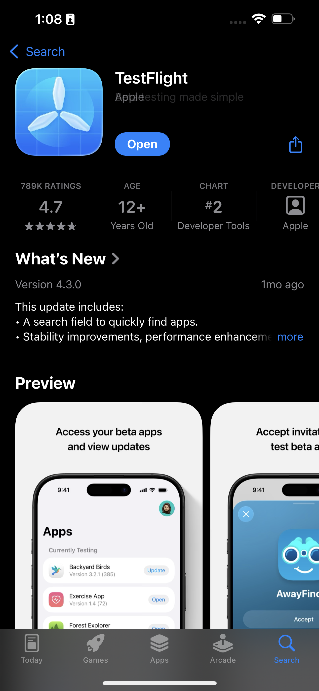
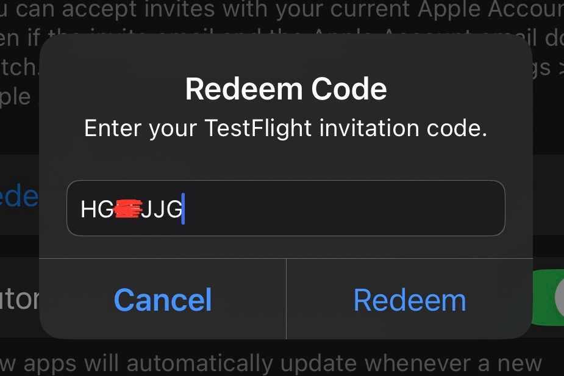
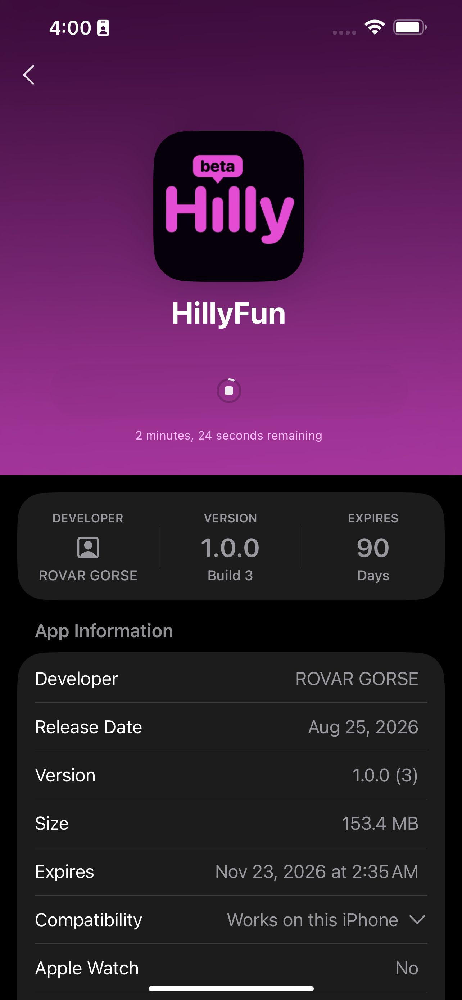

01
主播提供以下信息给管理员，并等待管理员发送邀请：
姓名无需真实，邮箱必须是AppleID

主播提供以下信息给管理员，并等待管理员发送邀请：
姓名无需真实，邮箱必须是AppleID

管理员邀请主播后，主播的邮箱会收到如图的邀请邮件，主播需点击邮件中的"Accept invitation"，前往苹果官方认证网站。

在苹果官方认证网站登录Apple account，登录成功后联系管理员审批申请。（只需登录 Apple account 即可）

管理员通过申请后，申请人的邮箱会收到苹果官方新的邮件，点击邮件内的"View in TestFlight"按钮，获取邀请码。

点击邀请码页面的链接或自行前往App Store下载苹果官方内测软件"TestFlight"


安装完成后，打开TestFlight，填写自己的邀请码，点击"Redeem"会自动下载iOS主播端。邀请码唯一，与AppleID绑定，无法分享给其他用户使用。

